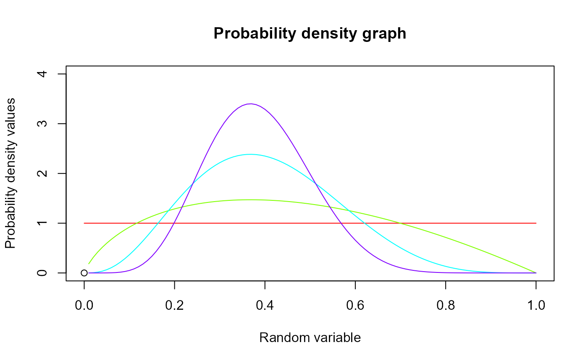
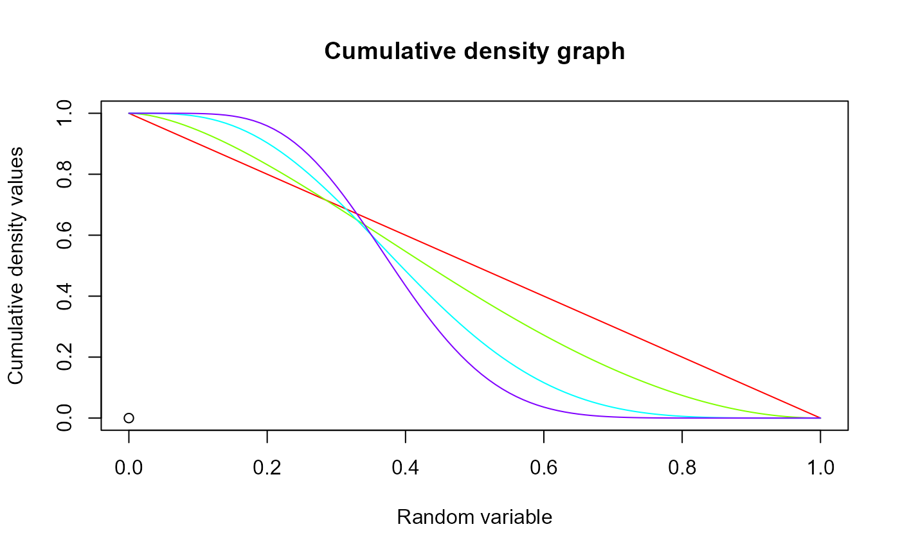

These functions provide the ability for generating probability density values, cumulative probability density values and moment about zero values for Gamma Distribution bounded between [0,1].
Arguments
- p
vector of probabilities.
- c
single value for shape parameter c.
- l
single value for shape parameter l.
Details
The probability density function and cumulative density function of a unit bounded Gamma distribution with random variable P are given by
$$g_{P}(p) = \frac{ c^l p^{c-1}}{\gamma(l)} [ln(1/p)]^{l-1} $$ ; \(0 \le p \le 1\) $$G_{P}(p) = \frac{ Ig(l,cln(1/p))}{\gamma(l)} $$ ; \(0 \le p \le 1\) $$l,c > 0$$
The mean the variance are denoted by $$E[P] = (\frac{c}{c+1})^l $$ $$var[P] = (\frac{c}{c+2})^l - (\frac{c}{c+1})^{2l} $$
The moments about zero is denoted as $$E[P^r]=(\frac{c}{c+r})^l $$ \(r = 1,2,3,...\)
Defined as \(\gamma(l) \) is the gamma function. Defined as \(Ig(l,cln(1/p))= \int_0^{cln(1/p)} t^{l-1} e^{-t}dt \) is the Lower incomplete gamma function.
NOTE : If input parameters are not in given domain conditions necessary error messages will be provided to go further.
References
Olshen AC (1938). “Transformations of the pearson type III distribution.” The Annals of Mathematical Statistics, 9(3), 176--200.
Examples
#plotting the random variables and probability values
col <- rainbow(4)
a <- c(1,2,5,10)
plot(0,0,main="Probability density graph",xlab="Random variable",ylab="Probability density values",
xlim = c(0,1),ylim = c(0,4))
for (i in 1:4)
{
lines(seq(0,1,by=0.01),dGAMMA(seq(0,1,by=0.01),a[i],a[i])$pdf,col = col[i])
}

dGAMMA(seq(0,1,by=0.01),5,6)$pdf #extracting the pdf values
#> [1] NaN 2.696915e-03 1.908823e-02 5.591507e-02 1.151860e-01
#> [6] 1.963513e-01 2.974469e-01 4.157526e-01 5.481913e-01 6.915796e-01
#> [11] 8.427858e-01 9.988302e-01 1.156946e+00 1.314613e+00 1.469580e+00
#> [16] 1.619861e+00 1.763742e+00 1.899766e+00 2.026722e+00 2.143630e+00
#> [21] 2.249727e+00 2.344447e+00 2.427404e+00 2.498378e+00 2.557294e+00
#> [26] 2.604211e+00 2.639301e+00 2.662839e+00 2.675188e+00 2.676786e+00
#> [31] 2.668131e+00 2.649777e+00 2.622316e+00 2.586375e+00 2.542603e+00
#> [36] 2.491664e+00 2.434233e+00 2.370984e+00 2.302590e+00 2.229714e+00
#> [41] 2.153006e+00 2.073098e+00 1.990604e+00 1.906109e+00 1.820178e+00
#> [46] 1.733342e+00 1.646106e+00 1.558942e+00 1.472288e+00 1.386552e+00
#> [51] 1.302105e+00 1.219288e+00 1.138405e+00 1.059728e+00 9.834979e-01
#> [56] 9.099206e-01 8.391724e-01 7.713992e-01 7.067177e-01 6.452166e-01
#> [61] 5.869582e-01 5.319796e-01 4.802945e-01 4.318943e-01 3.867500e-01
#> [66] 3.448137e-01 3.060204e-01 2.702894e-01 2.375261e-01 2.076239e-01
#> [71] 1.804654e-01 1.559242e-01 1.338667e-01 1.141532e-01 9.663983e-02
#> [76] 8.117977e-02 6.762468e-02 5.582605e-02 4.563641e-02 3.691057e-02
#> [81] 2.950669e-02 2.328725e-02 1.812007e-02 1.387906e-02 1.044499e-02
#> [86] 7.706093e-03 5.558644e-03 3.907329e-03 2.665574e-03 1.755734e-03
#> [91] 1.109170e-03 6.662063e-04 3.759598e-04 1.960545e-04 9.220202e-05
#> [96] 3.765617e-05 1.253703e-05 3.022169e-06 4.041950e-07 1.282574e-08
#> [101] 0.000000e+00
dGAMMA(seq(0,1,by=0.01),5,6)$mean #extracting the mean
#> [1] 0.334898
dGAMMA(seq(0,1,by=0.01),5,6)$var #extracting the variance
#> [1] 0.02065365
#plotting the random variables and cumulative probability values
col <- rainbow(4)
a <- c(1,2,5,10)
plot(0,0,main="Cumulative density graph",xlab="Random variable",ylab="Cumulative density values",
xlim = c(0,1),ylim = c(0,1))
for (i in 1:4)
{
lines(seq(0,1,by=0.01),pGAMMA(seq(0,1,by=0.01),a[i],a[i]),col = col[i])
}

pGAMMA(seq(0,1,by=0.01),5,6) #acquiring the cumulative probability values
#> [1] 1.000000e+00 9.999932e-01 9.998995e-01 9.995428e-01 9.987061e-01
#> [6] 9.971660e-01 9.947125e-01 9.911596e-01 9.863504e-01 9.801593e-01
#> [11] 9.724927e-01 9.632875e-01 9.525092e-01 9.401501e-01 9.262260e-01
#> [16] 9.107741e-01 8.938501e-01 8.755255e-01 8.558851e-01 8.350246e-01
#> [21] 8.130485e-01 7.900680e-01 7.661988e-01 7.415599e-01 7.162715e-01
#> [26] 6.904540e-01 6.642267e-01 6.377065e-01 6.110072e-01 5.842386e-01
#> [31] 5.575057e-01 5.309083e-01 5.045405e-01 4.784902e-01 4.528391e-01
#> [36] 4.276621e-01 4.030274e-01 3.789968e-01 3.556249e-01 3.329599e-01
#> [41] 3.110434e-01 2.899105e-01 2.695901e-01 2.501051e-01 2.314727e-01
#> [46] 2.137045e-01 1.968071e-01 1.807821e-01 1.656266e-01 1.513333e-01
#> [51] 1.378913e-01 1.252858e-01 1.134990e-01 1.025103e-01 9.229632e-02
#> [56] 8.283152e-02 7.408848e-02 6.603815e-02 5.865018e-02 5.189319e-02
#> [61] 4.573504e-02 4.014309e-02 3.508447e-02 3.052625e-02 2.643573e-02
#> [66] 2.278056e-02 1.952897e-02 1.664994e-02 1.411329e-02 1.188988e-02
#> [71] 9.951666e-03 8.271845e-03 6.824902e-03 5.586697e-03 4.534504e-03
#> [76] 3.647056e-03 2.904559e-03 2.288707e-03 1.782675e-03 1.371100e-03
#> [81] 1.040057e-03 7.770188e-04 5.708055e-04 4.115309e-04 2.905353e-04
#> [86] 2.003148e-04 1.344429e-04 8.748908e-05 5.493214e-05 3.307222e-05
#> [91] 1.894087e-05 1.021113e-05 5.108634e-06 2.325028e-06 9.348735e-07
#> [96] 3.173967e-07 8.433588e-08 1.521193e-08 1.353245e-09 2.142264e-11
#> [101] 0.000000e+00
mazGAMMA(1.4,5,6) #acquiring the moment about zero values
#> [1] 0.334898
mazGAMMA(2,5,6)-mazGAMMA(1,5,6)^2 #acquiring the variance for a=5,b=6
#> [1] 0.02065365
#only the integer value of moments is taken here because moments cannot be decimal
mazGAMMA(1.9,5.5,6)
#> [1] 0.3670253